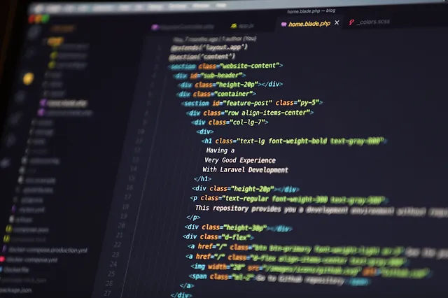

Mi chiamo Dario, ho 20 anni e vivo in un piccolo paese in provincia di Livorno. Ho maturato esperienza in svariati settori lavorativi, come l'artigianato, la meccanica e l'informatica.
I miei hobby sono la meccanica, più nello specifico sono appassionato del mondo dei motori a scoppio due tempi, il gaming e l'informatica in generale, come il coding, il video editing, etc..
Sono una persona solare, affettuosa, empatica, molto estroversa e dinamica, sia nelle relazioni che sul luogo di lavoro.
Le mie competenze
- Competenze meccaniche
- Competenze in merito all'artigianato
- Photoshop basic
Competenze da acquisire
- Front-End Development
- Back-End Development
- Video Editing